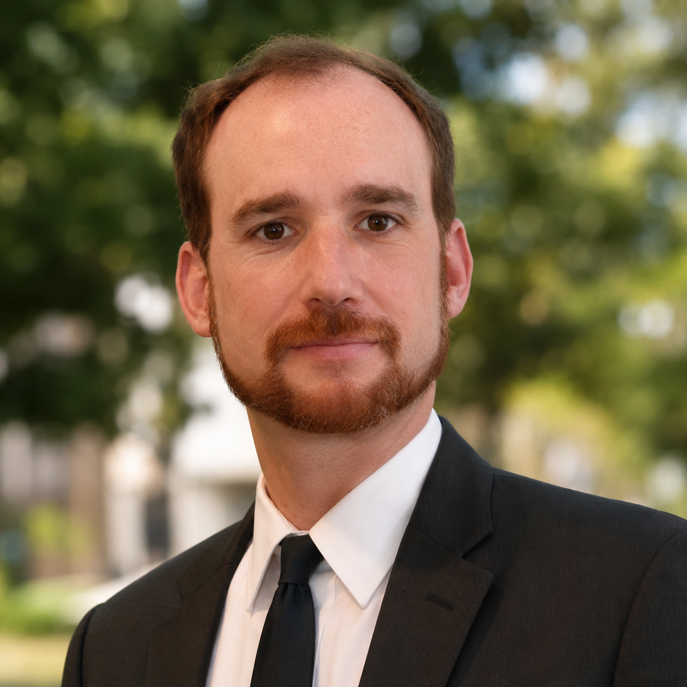

Michael S. Adler
Partner · Complex Commercial Litigation, Intellectual Property & Appellate
- Law School
- Yale Law School, J.D. — Symposium Editor, Yale Law Journal
- College
- Amherst College, A.B., Political Science and English — Phi Beta Kappa, Graduated cum laude
- Admitted
- All California State Courts
All California Federal District Courts
Ninth Circuit Court of Appeals
Federal Circuit Court of Appeals
United States Supreme Court - Publications
- “Cyberspace, General Searches and Digital Contraband: The Fourth Amendment and the Net-Wide Search,” 105 Yale Law Journal 1093 (1995)
- Member
- Beverly Hills Bar Association
Los Angeles County Bar Association
International Trademark Association
Having successfully obtained more than $145 million dollars in judgments on behalf of clients in complex commercial litigation, Michael Adler is equally skilled on the defense side of litigation. He has represented a wide range of clients, from individual entrepreneurs through some of the largest Fortune 500 companies, when they sought cost-efficient and effective counsel. In the media and entertainment field, Michael has represented television and motion picture studios, film producers, cable companies, video game developers, book publishers, film and television distributors and talent agencies in claims arising out of copyright infringement, trademark infringement, unfair competition, breach of contract, antitrust, fraud, racketeering, security interests and bankruptcy. Beyond media and entertainment, Michael has represented clients ranging from individual technology entrepreneurs and high-profile public figures through major international computer firms, retailers, consumer products manufacturers, banking and insurance companies and the University of Southern California. Among his most significant victories, Michael was one of two primary Gibson, Dunn & Crutcher trial counsel who secured a $122 million jury verdict in federal court for a German film distributor. Michael has also been lead attorney on numerous matters, including successfully representing the University of Southern California before the United States Supreme Court and successfully obtaining arbitration awards in excess of $2.5 million dollars. On the defense side, Michael was the lead associate in reversing a $2 billion dollar preliminary injunction against a firm client and securing a complete dismissal of all claims in that matter.
In addition to trial and appellate work, Michael has enjoyed considerable success representing clients seeking or defending against "provisional" remedies such as temporary restraining orders, preliminary injunctions and pre-judgment seizures of property, procedures that effectively can resolve a case at its very outset. Michael has also represented clients in a number of arbitrations and mediations including AFMA/IFTA arbitrations and domain name disputes.
Michael is a graduate of Yale Law School, where he served as an Editor for the Yale Law Journal. He is also a graduate of the National Institute on Trial Advocacy's in-depth course on trial skills. Law & Politics and the publishers of Los Angeles Magazine have named Michael a California "SuperLawyer" for nine years running (2007 onward) after naming him a California "Rising Star" in 2006.
Michael began his career as a litigation associate with Sullivan & Cromwell LLP, and thereafter served as a law clerk to the Honorable Stephen V. Wilson and, later, to the Honorable Gary A. Feess, both United States District Court Judges for the Central District of California in Los Angeles. Michael then joined Gibson Dunn & Crutcher LLP, where he was a litigation associate in the firm's Century City and Los Angeles offices for more than six years before forming Tantalo & Adler LLP.
Michael is a Los Angeles native, having attended University High School in West Los Angeles. Michael has been active with Bet Tzedek, the Anti-Defamation League, and the Los Angeles Legal Aid Foundation's Tenant Advocacy Project.